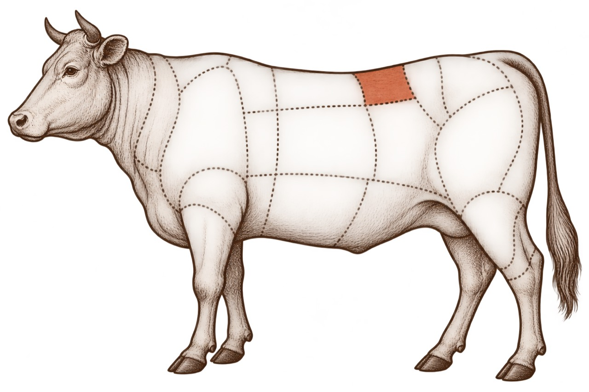
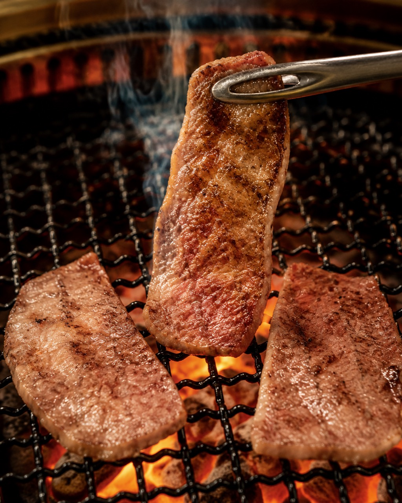
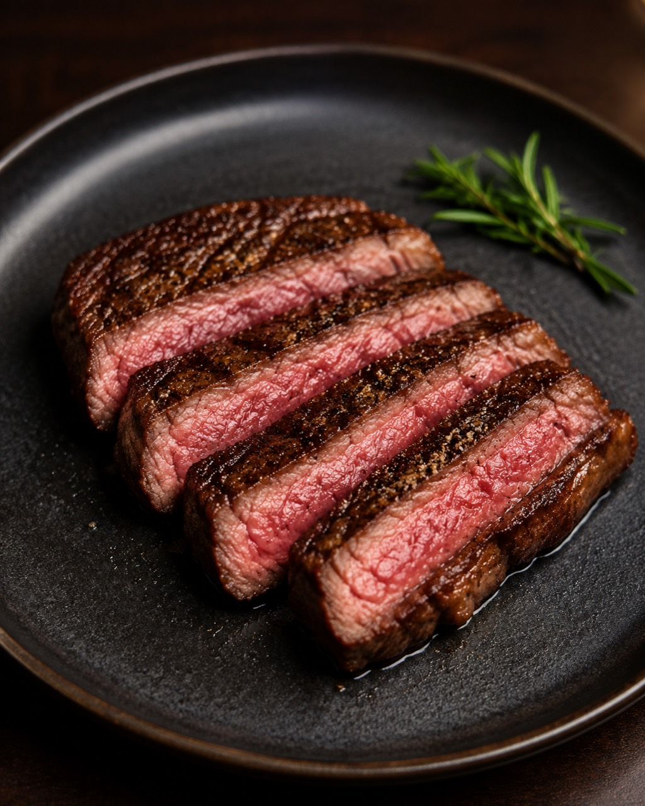

TONGUE
タン
牛の舌。歯切れのよさと軽快な旨みで、最初の一皿にぴったり。
脂
食感
THE CUTS OF BEEF, SIMPLY EXPLAINED
脂の甘み、赤身の旨み、心地よい歯ごたえ。
知れば知るほど、焼肉は楽しい。
01 / YAKINIKU CUT GUIDE
START HERE
焼肉の部位は、脂の量や筋繊維の細かさで表情が変わります。
気分に合う入口から、お気に入りを見つけてください。
FIND YOUR CUT
ボタンを選ぶと、おすすめの部位を絞り込めます。
TONGUE
牛の舌。歯切れのよさと軽快な旨みで、最初の一皿にぴったり。
SHOULDER
肩の希少部位。きめ細かなサシと、ほどけるようなやわらかさが魅力。
DIAPHRAGM
内臓肉ながら赤身らしい味わい。やわらかく、肉の旨みが濃い定番です。
RIB
カルビの中でも特にサシが美しい部位。甘い脂を少量ずつ楽しんで。
RUMP
お尻の先にある希少な赤身。しっかりしたコクと上品な脂の余韻。
OFFAL
ぷるりとした脂と香ばしさ。皮目からじっくり焼くと格別です。
BEEF MAP
肩・背・バラ・モモ。それぞれの場所が、異なるおいしさを生み出します。


HOW TO GRILL
肉を置いたときに、すぐ香ばしい焼き色がつく温度に。
片面に焼き色がついたら一度だけ返し、肉汁を閉じ込めます。
薄切りはさっと、厚切り赤身は休ませながら。焼きすぎは禁物です。
THE PERFECT BITE
一枚ずつ、香りと食感を比べながら。
自分だけのベストな焼肉時間を。
